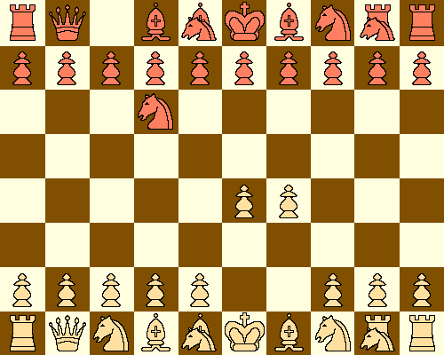

Chess variants, however, make it possible for someone to be a trailblazer again, exploring openings that have never been studied before. With computer assistance, this exploration is easier than ever before. In particular, Greg Strong's excellent ChessV program, in addition to being able to play a number of variants, has a "test this position" feature to help facilitate opening research.
How to play Schoolbook
The piece that looks like both a knight and a rook is called a "Marshall" and can move like either a knight or rook. The corresponding knight + bishop piece is called an "Archbishop". Castling is more flexible than in FIDE Chess: The king can move two, three, or, on the queenside, four squares towards the corresponding rook; the rook jump over the kind to land besides it.
Schoolbook is a very tactical game that rejuvinates the spirit of 19th century chess, when tactics were king and bold sacrifices were common. The knights and bishops are in the same positions relative to the king as they are in FIDE chess; this means that many opening patterns in FIDE chess also exist in Schoolbook.
A note on notation: The lower left corner square is the a1 square; the upper right hand corner square is the j8 square. In order to minimize confusion between "i" and "j", and second to the right hand file is called the "I" file instead of the "i" file. When castling, it is sufficient to note only the king's move. "f4" is moving white's pawn in front of the king forward two squares.
Just like in FIDE chess, one of White's best moves is moving the king's pawn forward two squares. This is called the "f4" move in Schoolbook notation. After 1. f4, black has a number of replies, the best probably being 1. ... f5. The game, at this point, can continue a number of ways, including 2. Ng3 Nd6 3. Nd3 Ng6, 2. Nd3 Nd6 3. Ng3 Ng6, or 2. Nd3 Ng6 3. Ng3 Nd6, resulting in the Schoolbook equivalent of the four knights defense:
Another way to continue the game after 2. ... f5 is with the Schoolbook form of the Bishop's opening, 3. Bd4. Black's best response at this point is probably 3. ... Ng6, which results in the following position:
White at this point can defend his f pawn with 4. Nd3 or 4. e3.
The Marshall Spike
Position after 1. f4 f5 2. Bd4 Bd5 3. Mh3 h6
One interesting dynamic in Schoolbook caused by the Marshall Spike is that it weakens the other player's kingside. Black will most likely castle queenside and white will castle kingside in a game with the above position. This will result in a dynamic game where both sides can use their pawns to attack the other king without weakening their own king's fortress.
The Nimzoesque Defense

The position after 1. f4 Nd6 2. g4
In the above position, Black can not move out any of his central pawns two squares until he finds some way to defend them. Should black play 2. ... f5, for example, white can simply respond with 3. gxf5 Nxf5 4. e4 and now black has to move his knight a third time in the opening, and white still has control of the center.
Another way white can reply to the Nimzoesque Defense is via 2. Ng3. Greg Strong has analysized this position, and found the following line: 1. f4 Nd6 2. Ng3 f5 3. Bd4 e6 4. Nd3 Bf6 5. Ne5 Mh6. The position obtained from this line is as follows:
Greg Strong's analysis of the Nimzoesque Defense
Here we see that it is black who performs a Marshall Spike; white's best reply is probably h3, although Mh3 is reasonable if White doesn't mind exchanging off the Marshalls and having doubled pawns.
The Sibahi Defense
The Sibahi Defense
As we can see, in this position black immediately applies pressure on the f pawn with his queen. Unlike many other openings in Schoolbook, the Sibahi Defense puts the queen in to play at the beginning of the game. White's best reply appears to be 2. Nd3, which develops a piece and defends the f pawn.
Black will probably, at this point, fianchetto his queenside bishop with 2. ... Bc7, which applies more pressure on the f pawn. White, at this point, can defend with either 3. e3 or 3. g3. These aren't the only options; ChessV feels white gets compensation for the f pawn if the gambit 3. e4!? is played.
An analysis using ChessV of the positions obtained after both 3. e3 and 3. g3 indicates that e3 is better; while white has more mobility with his kingside bishop after g3, this blocks the key square for his kingside knight and opens white's kingside bishop to harassment should black play Bb6. Here is the position after white defends with e3:
The position after 1. f4 c6 2. Nd3 Bc7 3. e3
Another way black can continue the Sibahi Defense after 2. Nd3 is to have a Sicilian setup with 2. ... d6. White's best reply, at this point, looks to be 3. Ng3, which results in the following position:
The position after 1. f4 c6 2. Nd3 d5 3. Ng3
Should black now apply more pressure on the f pawn with Bc7, white can reply with the e3 defense.